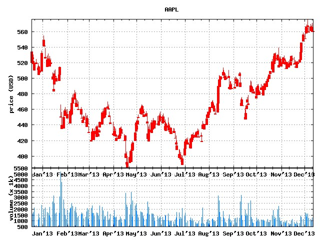
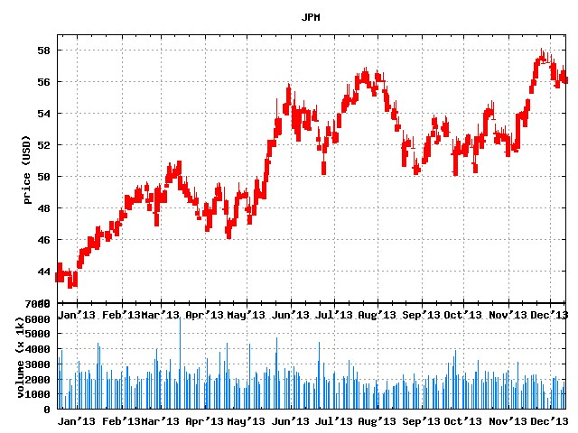
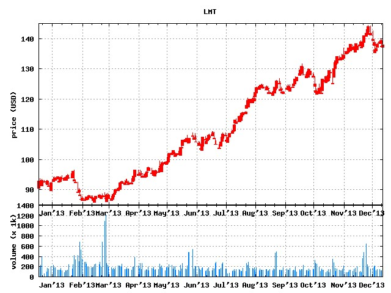
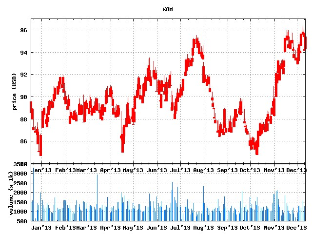

Introduction
Markowitz portfolio theory is used in investment management
as a tool for diversifying away risk through portfolio balancing.
Given a set of investment assets, it finds the most efficient
allocation (portfolio weights). Here, efficiency is defined
as minimizing the expected variance. Markowitz portfolios
may be subject to specified constraints, such as a specific
return on investment (expected price), non-negativity
constraints (restricting short selling), and may include
risk-free assets or market indexes [1].
This example will select a minimum variance portfolio,
constrained to a specified expected rate of return.
All results will be annualized as commonly reported to
investors.
Implementation
This optmization problem may be expressed as minimizing the portfolio variance,
subject to the constraint that the individual allocation weights of the stocks add to unity,
and the expected return is equal to the specified target.
$$
\begin{equation*}
\begin{aligned}
& \underset{w}{\text{minimize}}
& & \mathbf{\sigma}_{p,w}^2 = \mathbf{w}^T \mathbf{\Sigma} \mathbf{w} \\
& \text{subject to}
& & \mu_{opt} = \mathbf{w}^T \mathbf{\mu} \\
&
& & \mathbf{w}^T \mathbf{\underline{1}} = 1
\end{aligned}
\label{eq:optimization_problem}
\end{equation*}
$$
Where
$$
\begin{align}
\begin{array}{cl}
\mathbf{\sigma}_{p,w}^2 & \mbox{portfolio variance of weighted assets} \\
\mathbf{w} & \mbox{individual asset weights} \\
\mathbf{\Sigma} & \mbox{covariance matrix} \\
\mathbf{\mu} & \mbox{individual asset returns} \\
\mathbf{\mu}_{opt} & \mbox{target portfolio return} \\
\end{array}
\end{align}
$$
Forming the Lagrangian function for the constrained minimization, we have
$$
\begin{equation}
L(w,\lambda_1,\lambda_2) = \mathbf{w}^T \mathbf{\Sigma} \mathbf{w} + \lambda_1 (\mathbf{w}^T \mathbf{\mu} - \mu_{opt})
\label{eq:lagrangian}
\end{equation}
$$
So the first order conditions are
$$
\begin{equation}
2 \partial L(w,\lambda_1,\lambda_2) = 2 \mathbf{\Sigma} \mathbf{w} + \lambda_1 \mathbf{\mu} + \lambda_2 \mathbf{\underline{1}} = \mathbf{\underline{0}}
\label{eq:foc1}
\end{equation}
$$
$$
\begin{equation}
\frac{2 \partial L(w,\lambda_1,\lambda_2)}{\partial \lambda_1} = \mathbf{w}^T \mathbf{\mu} - \mu_{opt} = 0
\label{eq:foc2}
\end{equation}
$$
$$
\begin{equation}
\frac{2 \partial L(w,\lambda_1,\lambda_2)}{\partial \lambda_2} = \mathbf{w}^T \mathbf{\underline{1}} - 1 = 0
\label{eq:foc3}
\end{equation}
$$
Expressed in matrix form
$$
\begin{equation}
\mathbf{A}\mathbf{x} =
\left[ \begin{array}{ccc}
2 \mathbf{\Sigma} & \mathbf{\mu} & \mathbf{\underline{1}} \\
\mathbf{\mu}^T & 0 & 0 \\
\mathbf{\underline{1}}^T & 0 & 0 \\
\end{array} \right]
=
\left[ \begin{array}{c}
\mathbf{w} \\
\lambda_1 \\
\lambda_2 \\
\end{array} \right]
\left[ \begin{array}{c}
\mathbf{\underline{0}}^T \\
\mu_{opt} \\
1 \\
\end{array} \right]
= \mathbf{b}
\label{eq:lineq_expand}
\end{equation}
$$
This may be solved for $\mathbf{b}$, where the first $n-2$ elements of $\mathbf{b}$ are the portfolio weights ($\mathbf{w}_{n} = \mathbf{b}_{n}$).
$$
\begin{equation}
\mathbf{b} = \mathbf{A}^{-1} \mathbf{x}
\label{eq:lineq_mat}
\end{equation}
$$
Example Portfolio #1: AAPL, JPM, LMT, XOM
$$
\begin{array}{ l l l l }
\textbf{Portfolio #1 (AAPL, JPM, LMT, XOM)} \\
\hline
\textbf{Symbol} & \textbf{Weight} & \textbf{ROI} & \textbf{Volatilty} \\ \hline
AAPL & 0.08 & 11.4\% & 28.8\% \\
JPM & 0.12 & 31.6\% & 19.1\% \\
LMT & 0.39 & 55.8\% & 16.3\% \\
XOM & 0.40 & 08.2\% & 13.0\% \\
\hline
portfolio & & 25.0\% & 11.76\% \\
\hline
\end{array}
$$

Historical Data




References
[1] Wikipedia. (2011, Aug.). Modern Portfolio Theory. [Online]. Available: http://en.wikipedia.org/Modern_portfolio_theory.